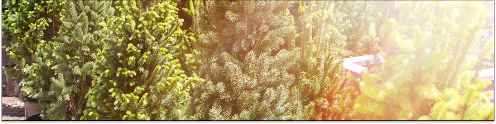

| # |
Nombre común |
Tipo |
Clima |
@for(planta of listaPlantas(); track planta.id){
| {{ planta.id }} |
{{ planta.nombre_comun }} |
{{ planta.tipo }} |
{{ planta.clima }} |
}
Total plantas de interior: {{cantidadPlantasInteriores()}}
Total plantas de exterior: {{cantidadPlantasInteriores()}}